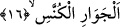

16. Bir kaybolup bir etrafı aydınlatan yıldızlara andolsun,
Yukardaki açıklamaların ışığı altında âyet-i kerimeye şöyle mânâ verilebilir: Dönüp
kaybolan gezegenlere yemin ederim. Bu gezegenler güneş ve ayın dışında beş adet olup
Merih, Zühal, Utarit, Zühre, Müşteri yıldızıdır. Yıldız kümesi içinde bu beş yıldızın
dışında gezegen olan yıldız yoktur. Bu nedenle bazıları güneş ve ayı da katarak bu yedi
gezegeni bir şiirde şöyle sıralamışlardır.
Âlemin yedi yıldızı vardır
Dünya gâh onlarla olur gâh onlarla bozulur
Bunlar Ay, Utarid ve Zühre
Güneş, Merîh, Müşteri ve Zühal’dir.
Bunlar, yedi gezegendir. Herbiri bir yörüngede yüzmektedirler. Ay bunların en yakını
olup onu izleyen ikinci yörüngede, ondan daha uzak olan üçüncü yörüngededir. Böylece
yıldızlar sırasıyla belli bir yörüngede bulunmaktadırlar.
“el-Cevâri’l-künnes” ifâdesinde “el-cevâri” câriye kelimesinin çoğuludur. Câriye,
yürüyen, gezen demektir. “el-Künnes” kânis kelimesinin çoğuludur. Kânis, gizlenmek
üzere herhangi bir koğuğa giren demektir.
Hunnes yıldızın “akıp giden, yürüyen ve bir yere gizlenen” şeklinde iki kelime ile
sıfatlanması sebebsiz değildir. Çünkü bu yıldızlar kendi yörüngelerinde akıp
gitmektedir. Veya kendi kendilerine güneş ve ayla birlikte -zevâhir ehlinin kanâati
uyarınca- gitmekte, yol almaktadırlar. Bunlar sonra geri dönüp güneşin ışığı altında
gizlenmektedirler. Bu yıldızların hunûsu, geri dönüşleri demektir. Yıldız burcun sonunda
görüldüğünde başlangıç noktasına dönüyor demektir. Şu halde yıldızın burcun sonundan
başlangıç noktasına dönmesi “hunûs”; güneş ışığı altında gizlenmesi ise “künûs”
olmaktadır.
Ay ile güneşe gelince bunlar bu anlamda gizlenmezler.
Aynu’l-maânî’de şöyle deniyor: Yıldızların künûsu, kendi yörüngelerinde geri
kalmaları ve gizlendikleri yerde saklanıp gizlenmeleridir. Tıpkı ceylanların koğuklarına
girip gizlenmeleri gibi. Künnes kelimesi “kenese’l-vahşu” tâbirinden türemedir ki
mânâsı; “ehlî olmayan hayvan kovuğuna girdi, ağaç dallarından kendine yapmış olduğu
yuvasına gizlendi” demektir.
Bazı âlimlere göre; bütün yıldızlar gündüzleri gizlenirler ve gözlerden kaybolurlar,
gece ise tekrar ortaya çıkarlar. Bir başka ifâdeyle; bulundukları yerden doğarlar. Tıpkı
ehli olmayan hayvanların yuvalarına girip gizlenmeleri gibi.
et-Te’vilâtü’n-Necmiyye’de şöyle deniyor: Burada Allah ruh güneşi ve kalp
kameriyle birlikte yol alan bâtıni beş havassa işâret ediyor. Bunlar ruh güneşinin
ışıklarına ve kalp kamerinin ışınlarına göre gizlenerek burçlarına dönen havastır.